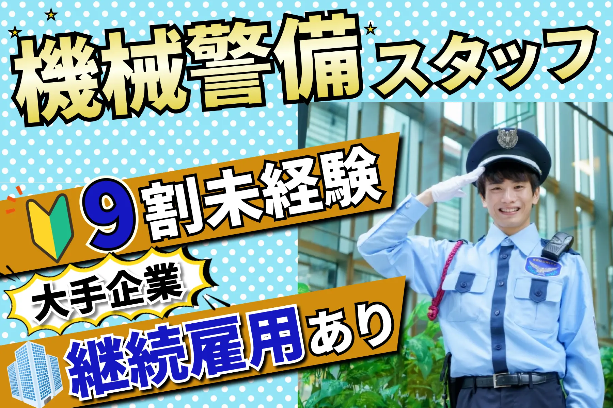

警備員求人バナー
原寸大バナーと制作意図をご覧になれます。

900×600 横長 PSD形式
20代〜50代をターゲットの求人広告バナーとして制作しました。
何の求人か一瞬で分かるよう職種名を最も大きくし、色数を抑えたトーンマナーより視認性とインパクトを優先して、コントラストの強い配色にしました。
Before → After
バナーの改善過程です。
-
Before

-
After
Before：人物が1人で、ビルを背景にしたポートフォリオ写真のような印象でした。
After：人物を切り出し、人数を増やして現場感と活気を出しました。
結果：求人バナーとしての訴求力が上がりました。
Before：水玉の明るい背景で、優しさは出る一方、印象が弱くなっていました。
After：濃色の背景に切り替え、人物と文字を際立たせました。
結果：コントラストが上がり、視認性が改善しました。
Before：メインキャッチと他のコピーの差が小さく、どこから読むべきか分かりにくい状態でした。
After：サブコピーのサイズを抑えてジャンプ率を上げました。
結果：視線が「機械警備スタッフ」に集まりやすくなりました。